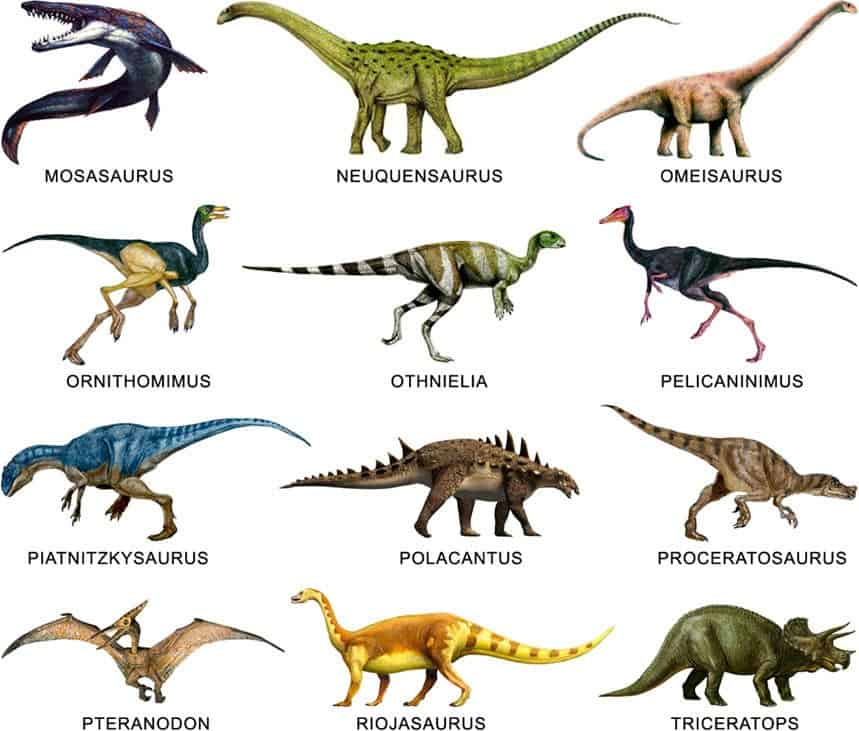
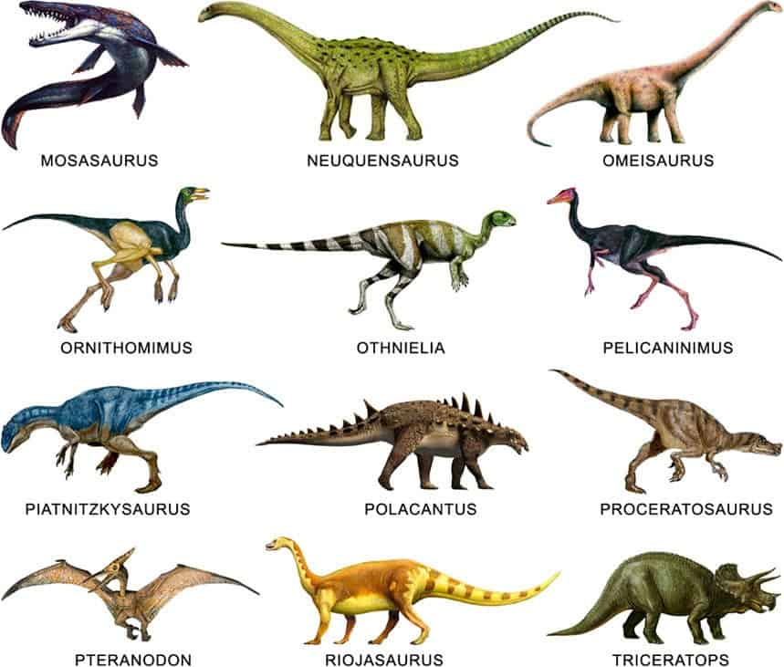

Tipos de Dinosaurios
Los dinosaurios se clasifican en dos grandes grupos: saurischios y ornitisquios, con herbívoros como el Triceratops y carnívoros como el T-Rex.

Explora las diversas especies que habitaron la Tierra
Los dinosaurios se clasifican en dos grandes grupos: saurischios y ornitisquios, con herbívoros como el Triceratops y carnívoros como el T-Rex.
